<div class="">

    <!-- titre -->
    
    <div class="text-2xl h-8 pt-1 text-white mb-5">
        <!-- titre -->
        {{title}}
        <!-- bouton ajout-->
        <div class="ml-2 inline-block">
            <button class="text-white bg-blue-600 border-0 py-1 px-1 focus:outline-none hover:bg-blue-900 rounded text-sm" (click)="createItem(type)"></button>
        </div>
    </div>

    <br>

    <!-- tableau-->
    <section class="text-gray-500 body-font text-xs mr-5">
        
            <div class="table-border p-2 rounded-lg ">
    
                <!-- header -->
                <div class="header flex pl-2 mb-1 mt-2 text-white ">
                    <div class="header-element flex-1">{{col0}}</div>
                    <div class="header-element flex-1 text-center">{{col1}}</div>
                    <div class="header-element flex-1 text-center">{{col2}}</div>
                    <div class="header-element flex-1 text-center">{{col3}}</div>
                    <div class="header-element flex-1 text-center">Delete</div>
                </div>
            
                <!-- data rows -->
                <div  *ngFor="let item of itemsData; let i = index" class="pl-2 pt-2 pb-2" [ngClass]="{'row-dark':i%2==0,'row-light':i%2>0}">
                    <div class="element flex">
                        <div class="flex-1 text-blue-500" (click)="onSelectedItem(i)"><a href="#">{{item.name}}</a></div>
                        <!-- champ telescope -->
                        <div class="flex-1 text-white text-center " *ngIf="type==='telescope'">{{item.aperture}}</div>
                        <div class="flex-1 text-white text-center" *ngIf="type==='telescope'">{{item.focal}}</div>
                        <div class="flex-1 text-white text-center" *ngIf="type==='telescope'">{{item.fdratio}}</div>

                        <!-- champ eyepiece -->
                        <div class="flex-1 text-white text-center " *ngIf="type==='eyepiece'">{{item.focal}}</div>
                        <div class="flex-1 text-white text-center" *ngIf="type==='eyepiece'">{{item.afov}}</div>
                        <div class="flex-1 text-white text-center" *ngIf="type==='eyepiece'">{{item.manufacturer}}</div>

                        <!-- champ binoculars -->
                        <div class="flex-1 text-white text-center " *ngIf="type==='binoculars'">{{item.aperture}}</div>
                        <div class="flex-1 text-white text-center" *ngIf="type==='binoculars'">{{item.magnification}}</div>
                        <div class="flex-1 text-white text-center" *ngIf="type==='binoculars'">{{item.afov}}</div>

                        <div class="flex-1 text-white text-center">                            
                            <button class="text-white bg-red-500 border-0 py-1 px-1 focus:outline-none hover:bg-red-700 rounded text-sm" (click)="deleteItem(item.id)"></button>
                        </div>                            
                    </div>
                </div>
                
            </div>
                
        </section>
</div>